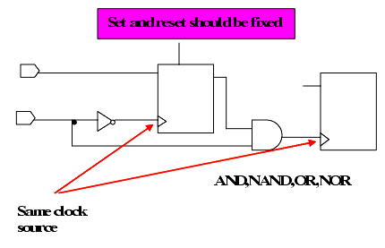

| Description | This rule detects if the set/reset of the flip-flop which drives enable signal is connected to a fixed value. |
| Policy | DESIGN |
| Ruleset | CLOCKS |
| Language | VHDL/Verilog |
| Type | Hardware |
| Severity | Warning |
module NTL_CLK42(q1, q2, clk, data, enable, set);
output q1, q2;
input clk, data, enable, set;
RTL_NTL_CLK42 U1_FIRE ( .out0(q1), .clock0(clk), .data0(data),
.enable0(eanble), .set0(set));
RTL_NTL_CLK42 U2_NOT_FIRE ( .out0(q2), .clock0(clk), .data0(data),
.enable0(eanble), .set0(1'b1));
endmodule
module RTL_NTL_CLK42 (out0, clock0, data0, enable0, set0);
output out0;
input clock0, data0, enable0, set0;
reg out0, N5;
wire N4, N6;
not inv0 ( N4, clock0 );
and and0 ( N6, N5, clock0 );
always @ (posedge N4 ) begin
if ( set0 == 1'b0 )
N5 <= 1'b1;
else
N5 <= enable0;
end
always @ ( posedge N6 ) begin
out0 <= data0;
end
endmodule
